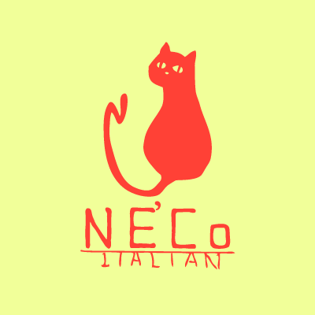

イタリアンNE'Co
はじめまして。早稲田大学そばのイタリアンレストラン、NE'Coです。
10 月 7 日
よりオープンします！（1 週間はランチ営業のみ）
どうぞよろしくお願いいたします。

-infomation-
169-0051 東京都新宿区西早稲田1-17-5
info@neco-w.com
ランチ 営業時間 11:30～15:00＊
ディナー 営業時間 17:30～23:00＊
＊ラストオーダーは終了の30分前
日曜定休
Copyright ©2013. NE'Co All rights reserved.